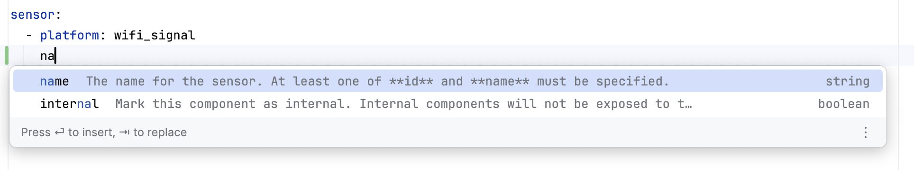
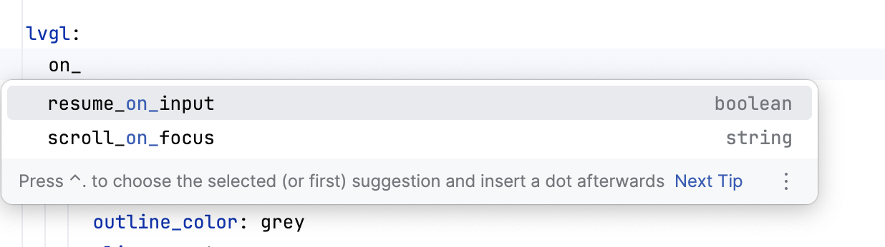
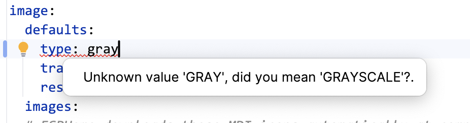
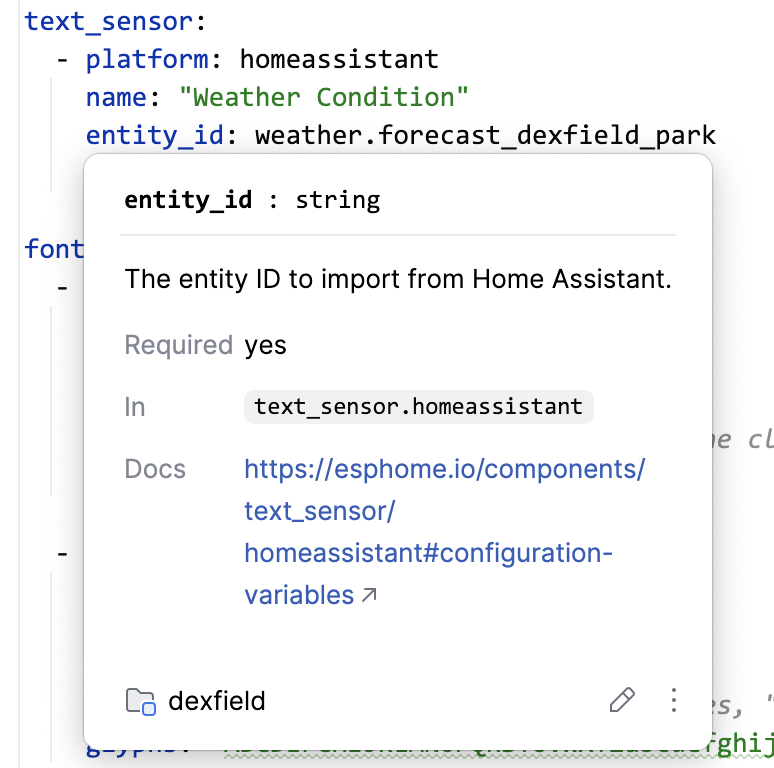
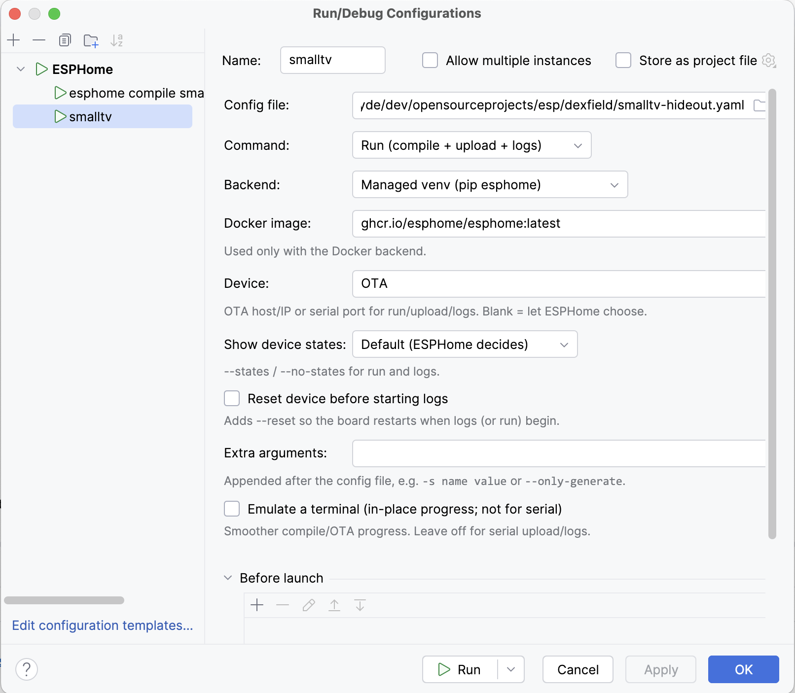

⌨️
Context-aware completion
Top-level keys, nested component keys, platform: values, list items, enums and booleans — plus ${substitution} names, triggers (on_*) and automation actions. Works in package-only configs too.
CLion · IntelliJ IDEA · PyCharm · 2024.2+
Context-aware completion — down to individual LVGL widget properties —
live validation from the real esphome config, hover docs,
go-to / rename / find-usages, and one-click compile, run &
flash. All inside the JetBrains IDE you already use.
Free & open source (Apache-2.0). Bring your own esphome, or let the plugin run it in a managed venv or Docker.
The plugin models the full ESPHome component catalog, so completion and docs match what the compiler actually accepts.
Top-level keys, nested component keys, platform: values, list items, enums and booleans — plus ${substitution} names, triggers (on_*) and automation actions. Works in package-only configs too.
The complete lvgl: tree: every widget type, its properties, and nested widgets — driven by ESPHome's own language schema, resolved lazily so recursive layouts complete correctly.
Runs the actual esphome config in the background and underlines reported errors on the exact lines — no second-guessing from a hand-written schema.
Go-to-definition, find-usages and rename for component id:s and substitutions. Id-reference completion offers only the in-scope ids of the right type.
Type, requiredness, default, range, units and allowed values for any field — with a link straight to the ESPHome docs — on hover or Ctrl+Q.
Run configurations that invoke ESPHome to compile, run, upload, logs or clean — with output in the Run console. More below ↓
Connect to a running device over the native API and watch its entities update live — with icons and on-off toggles for switches, lights and fans. Plaintext and encrypted (encryption:) APIs, no extra dependency.
Completion
Type a key and the plugin offers exactly what fits the context — with each option's value type and a one-line description from the catalog, so you pick the right thing without leaving the file.
platform: values, enums, booleans, idsstring, boolean, …) and docs
LVGL
Start typing inside an lvgl: block and the plugin offers the right keys for the context — widget triggers, properties, and their value types — all the way down the nested widget tree.
boolean, string, …)
Validation
Instead of approximating ESPHome's rules, the plugin runs esphome config and maps each reported problem back to the offending line — so what the editor flags is exactly what a build would reject.
ExternalAnnotator, no editor lag
Navigation & docs
Ids and substitutions become first-class symbols: Ctrl-click to their definition, rename them everywhere at once, or list every usage. Hover any key for its type, default and a docs link.

Right-click any config (top-level esphome: or packages:) → Run, or build an ESPHome run configuration by hand. Output streams to the Run console with stop / re-run.

--device — OTA host/IP or serial port--states / --no-states)--reset)The esphome on your PATH (or set under Settings → Tools → ESPHome). Full capability, including serial flashing.
A plugin-managed Python venv created with one click. Pick a version — blank = latest, beta = latest pre-release, dev or a branch/tag = from git, 2025.7.0 = that release. No global install, full serial support.
The official ghcr.io/esphome/esphome image — great for compile and OTA, with an optional shared cache. Serial flashing doesn't work in Docker on macOS (the VM has no USB passthrough) — use Local or the venv there.
From Settings → Plugins → Marketplace, search ESPHome, install and restart. (Or grab the zip from Releases → Install Plugin from Disk.)
Under Settings → Tools → ESPHome, choose how ESPHome runs: Local (your PATH esphome), a managed venv, or Docker. Both runs and background validation use it, so there's nothing else to wire up.
Open any file with a top-level esphome: (or packages:) key. Completion, hover docs and validation light up immediately. Right-click → Run to compile or flash.